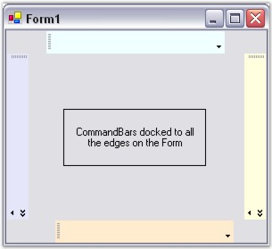
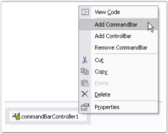
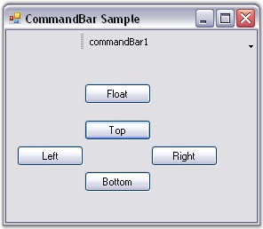
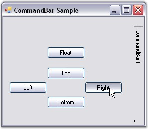

CommandBar can be docked to all the edges of the form such as Top, Bottom, Right and Left. Docking can be controlled by the CommandBar and CommandBarController properties.
Table 6: Docking CommandBar
|
CommandBar Property |
Description |
|
AllowedDockBorders |
Gets / sets the edges of the form along which the CommandBar may be docked. The options included are given below.
Bottom, Left, Right, Top and None.
When set to 'None', the CommandBar cannot be docked to the form. |
|
AlwaysLeadingEdge |
Indicates whether the CommandBar is always docked to the leading edge. |
|
AlwaysTrailingEdge |
Indicates whether the CommandBar is always docked to the trailing edge. |
|
DisableDocking |
Indicates whether the CommandBar is allowed to dock. |
|
DockModeWrapping |
Wraps the CommandBar when the bounds are less than the maximum length. |
|
DockState |
Gets / sets the current dock or float state for the CommandBar. |
|
ShowDockModeText |
Indicates whether the text caption should be displayed on a docked CommandBar. |
 Note:
The DisableDocking property must be set to 'False' for the above settings
to take effect.
Note:
The DisableDocking property must be set to 'False' for the above settings
to take effect.
The docked state of the CommandBar can be disabled by setting the DisableDocking property to 'True'.
EnabledDockBorders
This CommandBarController property allows you to dock the CommandBar to the edges of the form. The AllowedDockBorders property doesn't take any effect when this property is set to 'None'.
Table 7: CommandBarController
|
CommandBarController Property |
Description |
|
EnabledDockBorders |
Gets / sets the edges of the form along which the CommandBars are allowed to dock. The options included are given below.
Bottom, Left, Right, Top and None. |
|
[C#]
this.commandBar1.AllowedDockBorders = ((Syncfusion.Windows.Forms.Tools.CommandBarDockBorder)(((Syncfusion.Windows.Forms.Tools.CommandBarDockBorder.Top | Syncfusion.Windows.Forms.Tools.CommandBarDockBorder.Bottom) | Syncfusion.Windows.Forms.Tools.CommandBarDockBorder.Left))); this.commandBar1.AlwaysLeadingEdge = true; this.commandBar1.AlwaysTrailingEdge = true; this.commandBar1.DisableDocking = true; this.commandBar1.ShowDockModeText = false; this.commandBar1.DockState = Syncfusion.Windows.Forms.Tools.CommandBarDockState.Top; this.commandBar1.DockModeWrapping = true;
this.commandBarController1.EnabledDockBorders = ((Syncfusion.Windows.Forms.Tools.CommandBarDockBorder)(((Syncfusion.Windows.Forms.Tools.CommandBarDockBorder.Bottom | Syncfusion.Windows.Forms.Tools.CommandBarDockBorder.Left) | Syncfusion.Windows.Forms.Tools.CommandBarDockBorder.Right))); |
|
[VB.NET]
Me.commandBar1.AllowedDockBorders = (CType(((Syncfusion.Windows.Forms.Tools.CommandBarDockBorder.Top Or Syncfusion.Windows.Forms.Tools.CommandBarDockBorder.Bottom) Or Syncfusion.Windows.Forms.Tools.CommandBarDockBorder.Left), Syncfusion.Windows.Forms.Tools.CommandBarDockBorder)) Me.commandBar1.AlwaysLeadingEdge=True Me.commandBar1.AlwaysTrailingEdge = True Me.commandBar1.DisableDocking=True Me.commandBar1.ShowDockModeText = False Me.commandBar1.DockState = Syncfusion.Windows.Forms.Tools.CommandBarDockState.Top Me.commandBar1.DockModeWrapping = True
Me.commandBarController1.EnabledDockBorders = (CType(((Syncfusion.Windows.Forms.Tools.CommandBarDockBorder.Bottom Or Syncfusion.Windows.Forms.Tools.CommandBarDockBorder.Left) Or Syncfusion.Windows.Forms.Tools.CommandBarDockBorder.Right), Syncfusion.Windows.Forms.Tools.CommandBarDockBorder)) |
The following figure illustrates the above settings.

Figure 13: Docking CommandBars
Procedure
The following step by step procedure helps you to dock the CommandBar to the target location.
1. Drag the CommandBarController onto the form and add a CommandBar through the design time verb.

Figure 14: Adding CommandBar Through Design Time Verb
2. Drag buttons onto the form and arrange the buttons as shown as below.

Figure 15: CommandBar and Buttons in the Designer
3. Specify the docking state of the CommandBar in the button click event using the following code snippet.
|
[C#]
private void button1_Click(object sender, System.EventArgs e) { Button btn = sender as Button; // Dock to the Top if (btn == this.top) this.commandBar1.DockState = CommandBarDockState.Top; // Dock to the Bottom if (btn == this.bottom) this.commandBar1.DockState = CommandBarDockState.Bottom; // Dock to the Right if (btn == this.right) this.commandBar1.DockState = CommandBarDockState.Right; // Dock to the Left if (btn == this.left) this.commandBar1.DockState = CommandBarDockState.Left; // Dock as Floating if (btn == this.float_btn) this.commandBar1.DockState = CommandBarDockState.Float; } |
|
[VB.NET]
Private Sub button1_Click(ByVal sender As Object, ByVal e As System.EventArgs) Handles top.Click, right.Click, left.Click, bottom.Click, float_btn.Click Dim btn As Button = sender ' ' Dock to the Top If btn Is Me.top Then Me.commandBar1.DockState = CommandBarDockState.Top End If 'Dock to the Bottom If btn Is Me.bottom Then Me.commandBar1.DockState = CommandBarDockState.Bottom End If 'Dock to the Right If btn Is Me.right Then Me.commandBar1.DockState = CommandBarDockState.Right End If 'Dock to the Left If btn Is Me.left Then Me.commandBar1.DockState = CommandBarDockState.Left End If Dock as Floating If btn Is Me.float_btn Then Me.commandBar1.DockState = CommandBarDockState.Float End If End Sub |
Output
The following figure shows the CommandBar docked to the right border of the Form.

Figure 16: CommandBar docked to the right border of the form on clicking the Right Button
A sample which demonstrates the Docked CommandBar is available in the below sample installation path.
..My Documents\Syncfusion\EssentialStudio\Version Number\Windows\Tools.Windows\Samples\2.0\CommandBars Package\CommandBars
See Also